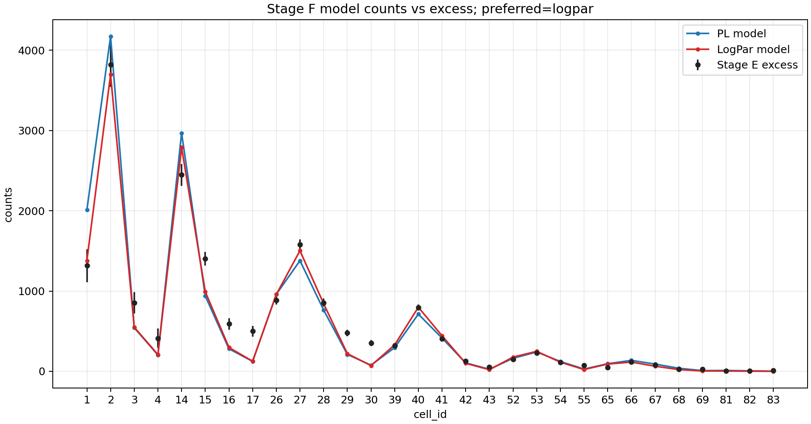
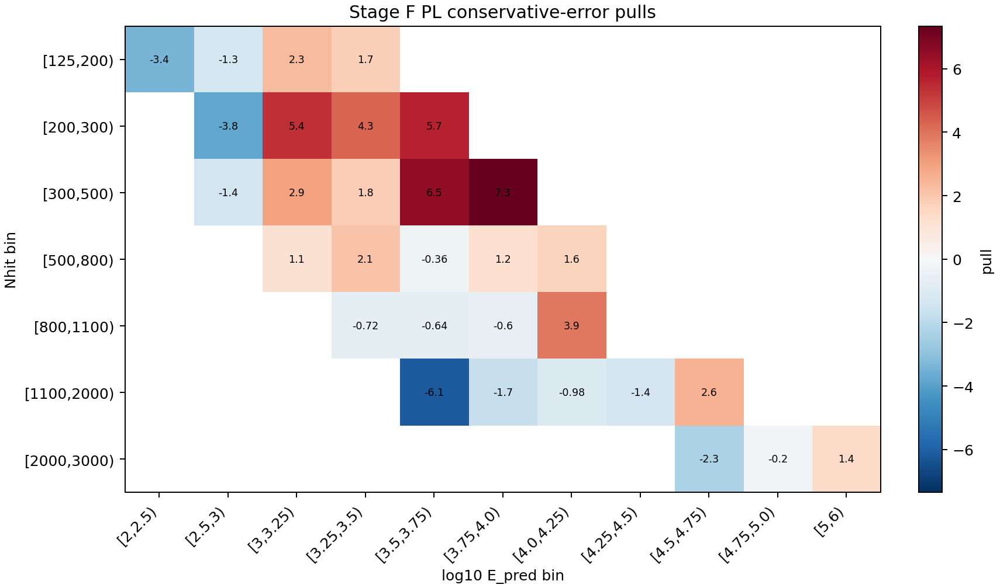
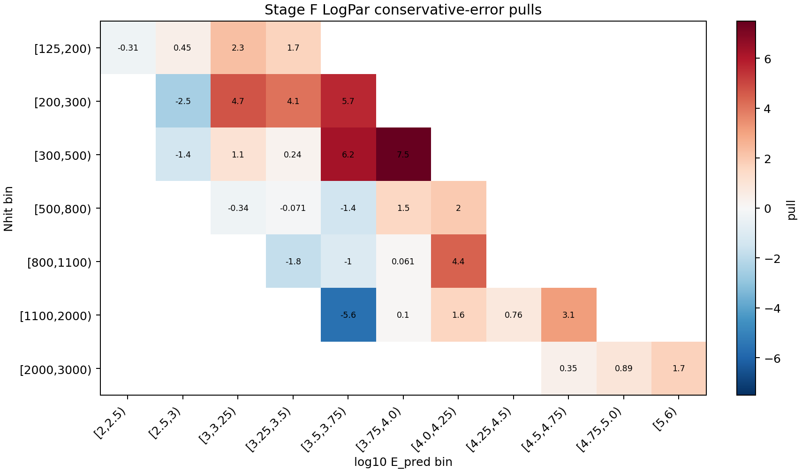

Stage F 前向折叠拟合报告
本页记录当前 Stage F 的目的、输入、方法和结果：把假设的 Crab 能谱通过 Stage A 二维响应折叠到观测 cell，与 Stage E 的逐 cell excess 做拟合对比。当前报告使用 selector v3_baseline_psfborrow，作为进入 Stage G 的 diagnostic baseline。
结论摘要
保守误差口径下，当前首选模型是 logpar。Reference-count preflight 状态为 passed，该 run 的状态是：可作为 Stage G diagnostic baseline。
v3_baseline_psfborrow13400.3，Stage E excess 为 18082.6，observed/expected = 1.34941。
为什么做 Stage F
Stage A 给出 MC 响应 A_eff(E_true, theta)，Stage E 给出观测侧每个 cell 的 N_on、背景期望 B_on 和 excess。Stage F 的作用是把二者接起来：不从 E_pred 反推真实能量，而是把一个物理能谱假设从真实能量空间前向折叠到观测 cell 空间，再和 Stage E excess 比较。
这一步有两个检查目标：第一，确认 Stage A 的绝对响应归一化和 Stage E 的信号量级在同一数量级；第二，为 Stage G 的 SED 点提供一个冻结谱形的全局拟合基准。
Stage F 做了什么
本 run 读取 Stage A 的二维响应和 Stage E 的逐 cell 信号表，按 Crab 在观测窗口内的天顶角曝光分布计算每个 cell 的预期信号数。拟合统计量是保守误差口径下的 chi-square：
chi2 = sum_b ((excess_b - N_exp,b) / sigma_b)^2
谱模型包括幂律 PL 和 LogPar。LogPar 只有在相对 PL 的 chi2 改善达到阈值时才作为首选；本 run 的改善量为 45.126，因此保留 PL。
- Stage A response:
/mnt/mydisk/server/projects/energy_reconstruction/apply/output/stage_a_v3_candidate/response_2d_v3_candidate.npz - Stage E signal:
/mnt/mydisk/server/projects/energy_reconstruction/apply/output/stage_e_v3_candidate_psfborrow/runs/v3_stage_e_psfborrow_slurm_42029/signal_v3_candidate_psfborrow.npz - Cell subset:
/mnt/mydisk/server/projects/energy_reconstruction/apply/config/cell_selector_v3_baseline_psfborrow.csv
Cell subset 说明
Stage F 不在拟合中按 residual 自动删 cell；include/exclude 完全来自传入的 selector CSV。selector 中的排除原因会记录在 metadata，用于区分 frozen baseline、transition probe 和 diagnostics。
- Included cells:
1, 2, 3, 4, 14, 15, 16, 17, 26, 27, 28, 29, 30, 39, 40, 41, 42, 43, 52, 53, 54, 55, 65, 66, 67, 68, 69, 81, 82, 83 - Excluded cells:
5, 6, 7, 8, 9, 10, 11, 12, 13, 18, 19, 20, 21, 22, 23, 24, 25, 31, 32, 33, 34, 35, 36, 37, 38, 44, 45, 46, 47, 48, 49, 50, 51, 56, 57, 58, 59, 60, 61, 62, 63, 64, 70, 71, 72, 73, 74, 75, 76, 77, 78, 79, 80, 84
拟合参数
- PL:
phi0=2.699452e-12,gamma=2.69048, p-value3.2927e-49，chi2/ndof =309.42/28。 - LogPar:
phi0=3.013387e-12,alpha=2.80157,beta=0.132799, p-value8.5526e-41，chi2/ndof =264.29/27。
逐 cell 残差
| cell | Nhit bin | log10 E_pred bin | excess | err | PL model | PL pull | LogPar model | LogPar pull |
|---|---|---|---|---|---|---|---|---|
| 1 | [125,200) | [2,2.5) | 1315.14 | 203.11 | 2010.21 | -3.4222 | 1378.85 | -0.31369 |
| 2 | [125,200) | [2.5,3) | 3821.43 | 277.06 | 4173.56 | -1.2709 | 3697.53 | 0.44718 |
| 3 | [125,200) | [3,3.25) | 853.737 | 134.43 | 542.375 | 2.3162 | 548.707 | 2.2691 |
| 4 | [125,200) | [3.25,3.5) | 412.724 | 121.41 | 203.165 | 1.726 | 208.267 | 1.684 |
| 14 | [200,300) | [2.5,3) | 2446.95 | 136.28 | 2968.36 | -3.8259 | 2788.96 | -2.5096 |
| 15 | [200,300) | [3,3.25) | 1402.76 | 86.667 | 938.354 | 5.3585 | 991.622 | 4.7438 |
| 16 | [200,300) | [3.25,3.5) | 591.37 | 72.42 | 280.243 | 4.2962 | 297.273 | 4.061 |
| 17 | [200,300) | [3.5,3.75) | 499.915 | 66.197 | 123.691 | 5.6834 | 125.451 | 5.6568 |
| 26 | [300,500) | [2.5,3) | 884.429 | 52.76 | 958.998 | -1.4134 | 957.49 | -1.3848 |
| 27 | [300,500) | [3,3.25) | 1576.75 | 67.507 | 1378.58 | 2.9355 | 1502.04 | 1.1066 |
| 28 | [300,500) | [3.25,3.5) | 854.442 | 50.572 | 763.5 | 1.7983 | 842.408 | 0.23796 |
| 29 | [300,500) | [3.5,3.75) | 477.916 | 41.208 | 210.525 | 6.4888 | 220.665 | 6.2428 |
| 30 | [300,500) | [3.75,4.0) | 354.053 | 37.788 | 76.3509 | 7.3489 | 70.7398 | 7.4974 |
| 39 | [500,800) | [3,3.25) | 321.49 | 23.292 | 295.586 | 1.1121 | 329.317 | -0.33606 |
| 40 | [500,800) | [3.25,3.5) | 794.912 | 38.924 | 712.58 | 2.1152 | 797.689 | -0.071348 |
| 41 | [500,800) | [3.5,3.75) | 404.504 | 26.711 | 414.201 | -0.36303 | 443.033 | -1.4424 |
| 42 | [500,800) | [3.75,4.0) | 128.165 | 18.65 | 104.911 | 1.2469 | 99.6129 | 1.5309 |
| 43 | [500,800) | [4.0,4.25) | 53.8146 | 17.21 | 25.6943 | 1.6339 | 20.1352 | 1.957 |
| 52 | [800,1100) | [3.25,3.5) | 151.624 | 14.013 | 161.748 | -0.72251 | 177.06 | -1.8152 |
| 53 | [800,1100) | [3.5,3.75) | 229.54 | 18.179 | 241.173 | -0.63996 | 248.608 | -1.0489 |
| 54 | [800,1100) | [3.75,4.0) | 114.1 | 13.78 | 122.403 | -0.60251 | 113.258 | 0.061115 |
| 55 | [800,1100) | [4.0,4.25) | 73.6798 | 11.676 | 28.198 | 3.8954 | 22.2044 | 4.4088 |
| 65 | [1100,2000) | [3.5,3.75) | 46.7126 | 7.8286 | 94.6679 | -6.1256 | 90.4757 | -5.5901 |
| 66 | [1100,2000) | [3.75,4.0) | 116.251 | 12.073 | 136.517 | -1.6786 | 115.043 | 0.1001 |
| 67 | [1100,2000) | [4.0,4.25) | 80.1093 | 10.29 | 90.2236 | -0.98289 | 63.7454 | 1.5902 |
| 68 | [1100,2000) | [4.25,4.5) | 27.7138 | 7.7644 | 38.488 | -1.3876 | 21.7909 | 0.76283 |
| 69 | [1100,2000) | [4.5,4.75) | 28.8734 | 7.9452 | 8.48675 | 2.5659 | 3.91128 | 3.1418 |
| 81 | [2000,3000) | [4.5,4.75) | 4.26813 | 2.7806 | 10.677 | -2.3048 | 3.28672 | 0.35295 |
| 82 | [2000,3000) | [4.75,5.0) | 4.97784 | 4.1258 | 5.82008 | -0.20414 | 1.29394 | 0.8929 |
| 83 | [2000,3000) | [5,6) | 10.2142 | 5.6379 | 2.29188 | 1.4052 | 0.506289 | 1.7219 |
结果图



